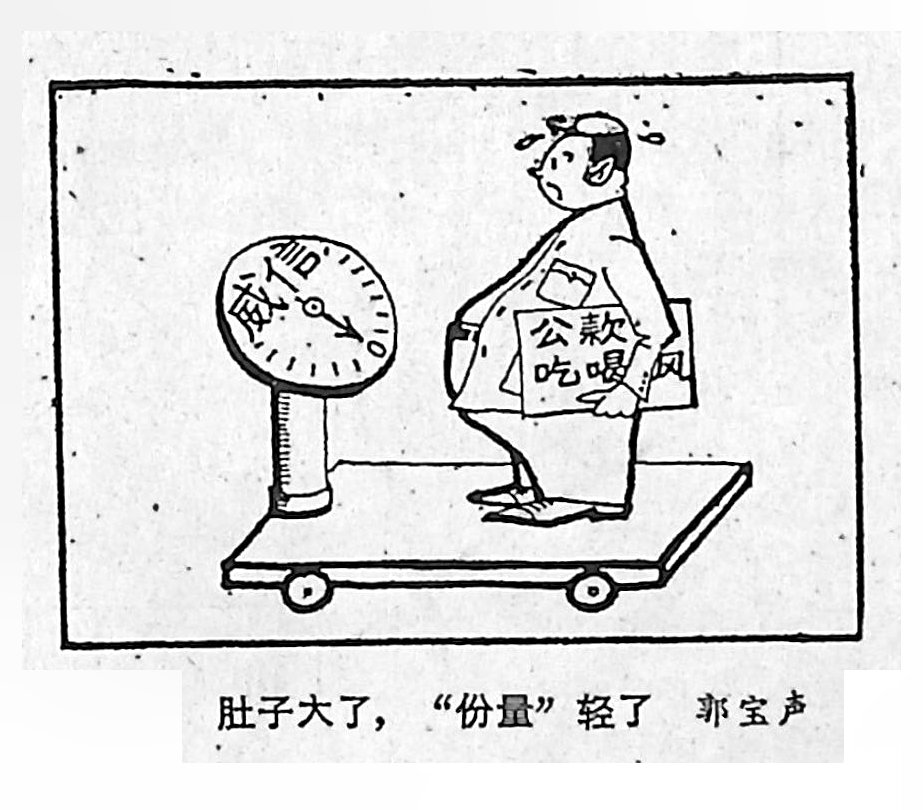

郭宝声 《人事》1988年第1期（总第28期），第47页
肚子大了，“份量”轻了
Bigger Belly, Less “Weight”
- Text in the drawing
- 威信 / 公款吃喝风
Prestige / The craze for eating and drinking at public expense - Description
- A pot-bellied cadre holding a placard reading “the craze for eating and drinking at public expense” steps on a platform scale whose dial measures “prestige” — and the needle barely moves.
- Note
- 份量, “weight,” also means standing or authority.
- Artist
- Guo Baosheng 郭宝声
- Published in
- 《人事》1988年第1期（总第28期）, p. 47
- Themes
- Gifts and banquets · Privilege

Cite
Guo Baosheng, “肚子大了，“份量”轻了” [Bigger Belly, Less “Weight”], Renshi (Personnel) 《人事》, 1988, no. 1, p. 47.